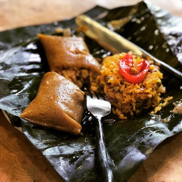

Pasteles come from the indigenous people of Puerto Rico the Taino and originate before colonial times. The tainos made the first masa with cassava, yautia, and squash. The frying techniques and use of bananas in the recipe are likely from African Slaves who came from Africa to Puerto Rico. The sofrito used to make pasteles comes from Spain.Pasteles were influenced collectively from ingredients and techniques from the Indigenous, West African, Spanish people who inhabited the island . Pasteles became associated with Holidays because of the long process it took to make them. and how they are wrapped like presents.
Pasteles are a traditional Puerto Rican food that are typically served on holidays such as Christmas and Three Kings Day. They are similar to tamales with many Latin American countries having similar versions with Hallacas which are from Venezuela being an example of this. Instead of corn husks which are used with tamales pasteles use banana leaves and are boiled rather than steamed. The masa comprises green plantations, white yautia, potato, and They are typically served with arroz con gandules, a Puerto Rican staple. Making pasteles is a family effort with many family members making different parts forming an assembly line.
>Pasteles Recipe
Lucy Ramirez.>Pasteles
https://cooking.nytimes.com/recipes/1019082-pasteles
Meseidy.pasteles de masa – a Puerto rican Christmas tradition.
https://thenoshery.com/pasteles-de-masa/
Holiday Puerto Rican Pasteles(Pasteles Puertorriquenos). December 17, 2018
https://mlsvensson.blogspot.com/2018/12/holiday-puerto-rican-pasteles-pasteles.html
Michelle Ezratty Murphy.Pasteles with Pork, Green Bananas, Plantains, Yautía & Achiote. September 2020
https://familiakitchen.com/puerto-rican-pasteles-pork-green-bananas-yautia-con-achiote/
Hector Rodriguez.12-29-22.Puerto Rican Pasteles
https://www.thespruceeats.com/pasteles-basics-2138107
Claire Jimenez.Dec 18, 2019.For Puerto Ricans, It’s Not Christmas Without Pasteles
https://www.thespruceeats.com/pasteles-basics-2138107
Judy's Rincon Boricua.December 23, 2021.PASTELES VEGANOS BORICUAS 🇵🇷
https://www.youtube.com/watch?v=DTEdNnzFb74